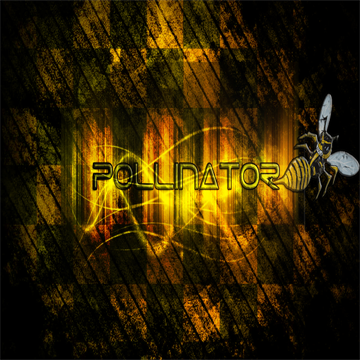

Информация обо мне
На данной странице я попытаюсь максимально кратко и информативно донести большинство информации о себе.
Характеристика
Стрелков Николай Александрович, 16.12.2002 года рождения, являюсь учеником МБОУ"Выскоключевая СОШ". В настоящее время заканчиваю обучение в 9-ом классе.Проявляю себя, как адекватного и спокойного человека. Не допускаю пропусков занятий и нарушения дисциплины. Средний балл успеваемости-4,7. Веду активный образ жизни. Избегаю конфликтных ситуаций и подобного рода обстоятельств, в большинстве жизненных ситуаций предпочитаю свободомыслие.
По характеру стараюсь быть добрым, независимым и образованным.Вежлив при общении со взрослыми и другими людьми. Пользуюсь авторитетом среди друзей и товарищей. Не хочу полностью вклиниваться и зависить от общества и окружающего меня социума, скорее наоборот, придерживаюсь пределов, в которых ощущаю себя комфортно. Развиваю такие качества, как:
- Целеустремленность
- Трудолюбие
- Саморазвитие
- Эмоциональная устойчивость
- Организованность
Интересна деятельность связанная с душевной сферой(рисование,музыка и т.д.). Хорошо развита фантазия и душевное разнообразие. В определенных ситуациях проявляю себя, как человек творческий и креативный.
